Publications
* equal contribution † project leader
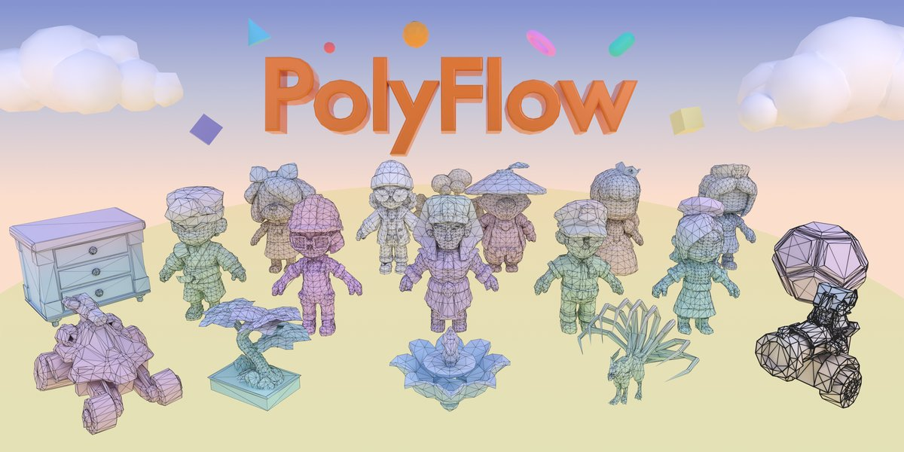
PolyFlow: Continuous Topology Embedding Flow Matching for Artist-style Mesh Generation
SIGGRAPH Asia, 2026
A Transformer-based flow-matching framework for parallel artist-style mesh generation with continuous topology embedding, achieving faster inference and precise vertex-count control.
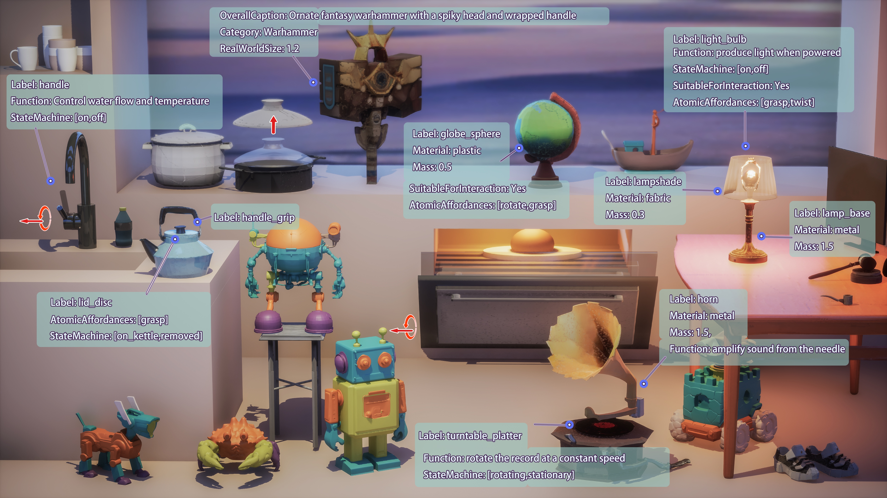

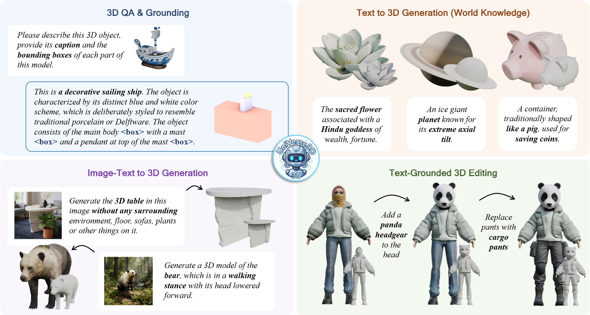
UniVerse3D: Emerging Properties of Unified Multimodal Models in 3D Understanding and Generation
CVPR FINDINGS Track, 2026
We propose UniVerse3D, the first 3D Unified multimodal models.
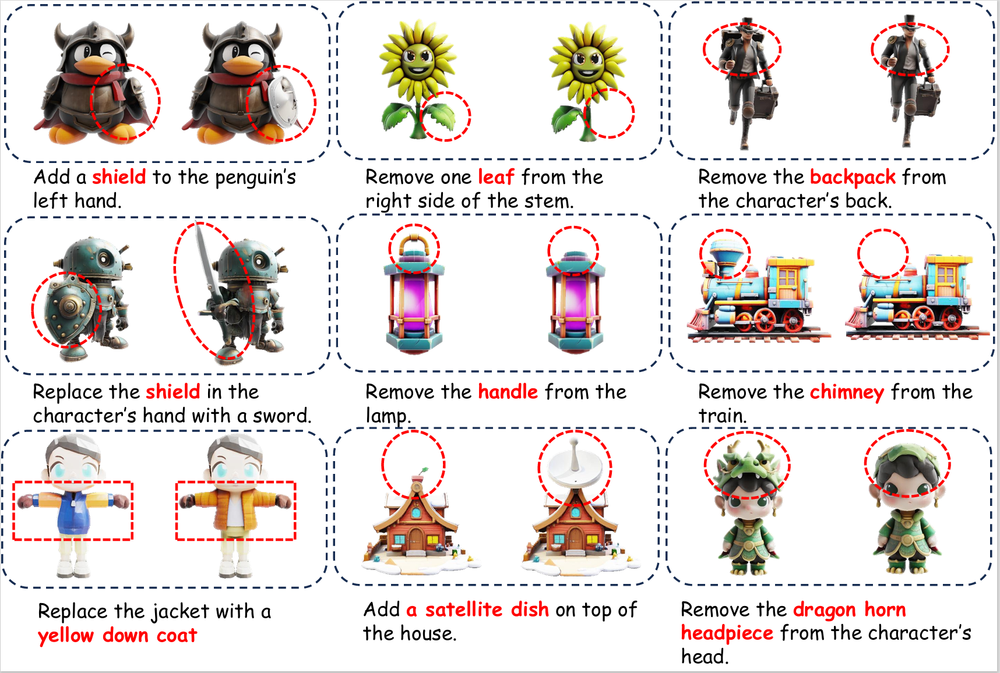


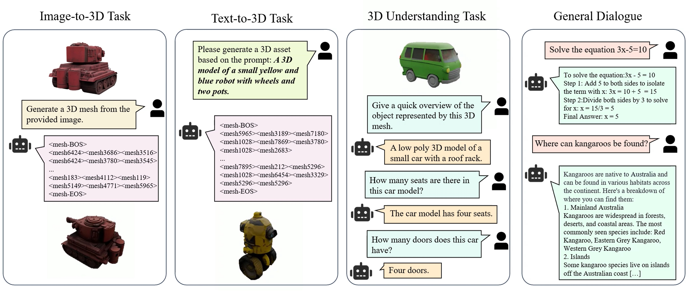

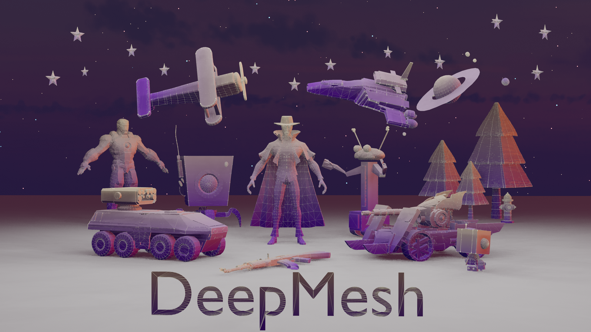

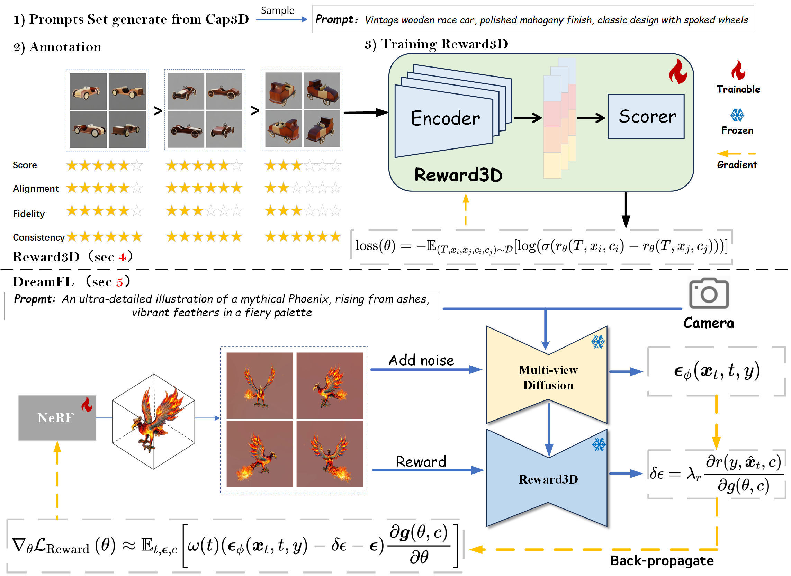

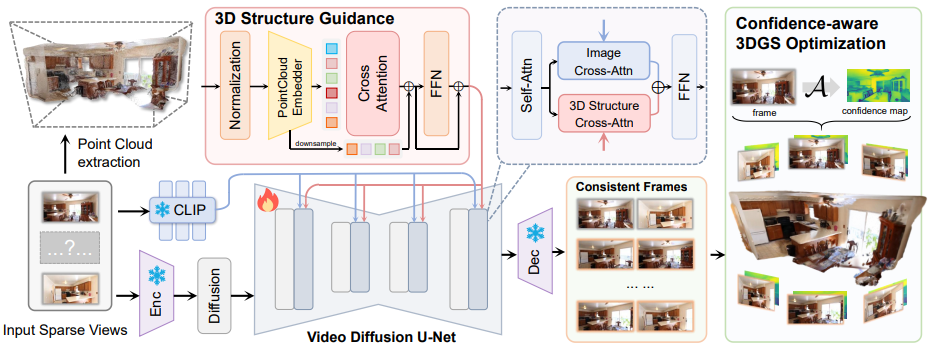
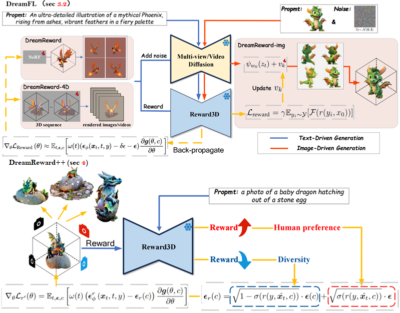
DreamReward-X: Boosting High-Quality 3D Generation with Human Preference Alignment
IEEE TPAMI, 2025
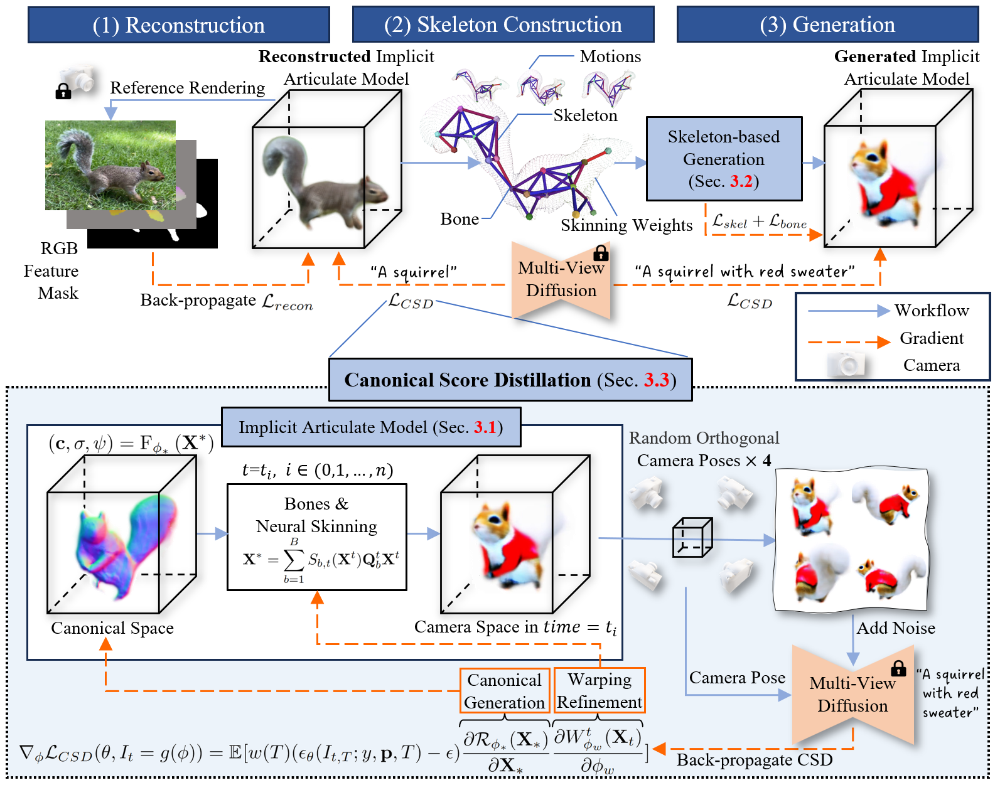
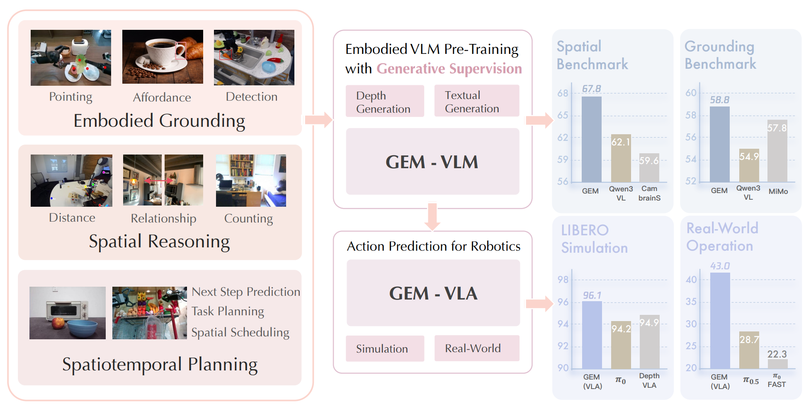